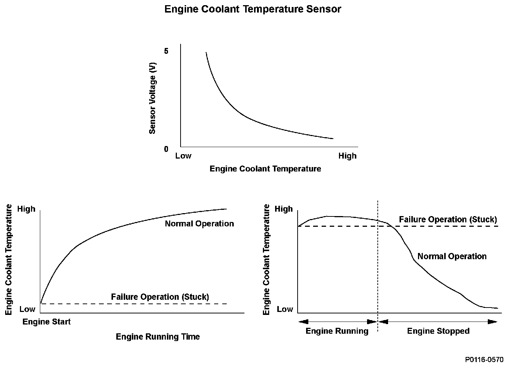
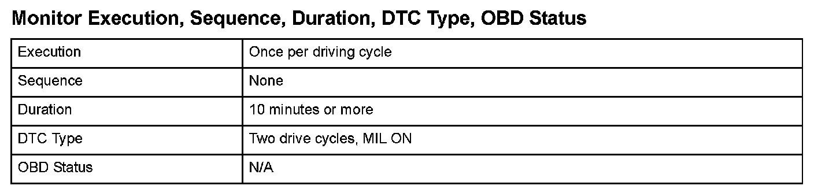
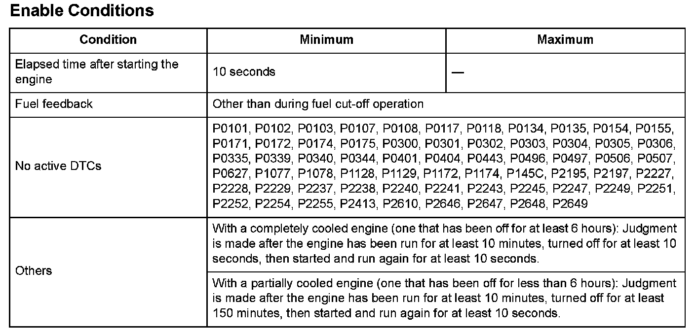

Advanced Diagnostics
DTC P0116: Engine Coolant Temperature (ECT) Sensor 1 Circuit Range/Performance Problem
General Description
The powertrain control module (PCM) supplies voltage to the engine coolant temperature (ECT) signal circuit (about 5 V) through a pull-up resistor. As the engine coolant cools, ECT sensor 1 resistance increases, and the PCM detects a high signal voltage. As the engine coolant warms, ECT sensor 1 resistance decreases, and the PCM detects a low signal voltage. If the ECT output voltage after driving a set time after starting the engine does not reach a set temperature, or when the difference between the ECT output voltage when driving and the output voltage of the ECT after the engine is stopped a set time does not change a certain amount, the PCM detects a malfunction and a DTC is stored.

Monitor Execution, Sequence, Duration, DTC Type, OBD Status

Enable Conditions
Malfunction Threshold
Malfunction determination 1:
With a completely cooled engine (one that has been off for at least 6 hours):
When the change in coolant temperature after 10 minutes or more of running time is 50 °F (10 °C) or less, a malfunction is detected.
Malfunction determination 2:
With a partially cooled engine (one that has been off for less than 6 hours):
When the difference between the coolant temperature after 10 minutes or more of running time minus the coolant temperature after the engine has been off for 150 minutes and then run for 10 seconds is 50 °F (10 °C) or less, a malfunction is detected.
Driving Pattern
- With a completely cooled engine (one that has been off for at least 6 hours).
1. Start the engine, and let it idle for at least 10 minutes.
2. Turn off the ignition for 10 seconds, then restart the engine and let it idle for at least 10 seconds.
- With a partially cooled engine (one that has been off for less than 6 hours).
1. Start the engine, and let it idle for at least 10 minutes.
2. Turn off the ignition for 150 minutes, then restart the engine and let it idle for at least 10 seconds.
Diagnosis Details
Conditions for illuminating the MIL
When a malfunction is detected during the first drive cycle, a Temporary DTC is stored in the PCM memory. If the malfunction recurs during the next (second) drive cycle, the MIL comes on and the DTC and the freeze frame data are stored.
Conditions for clearing the MIL
The MIL will be cleared if the malfunction does not recur during three consecutive trips in which the diagnostic runs
The MIL, the DTC, the Temporary DTC, and the freeze frame data can be cleared by using the scan tool Clear command or by disconnecting the battery.